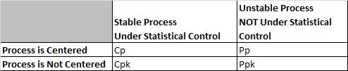
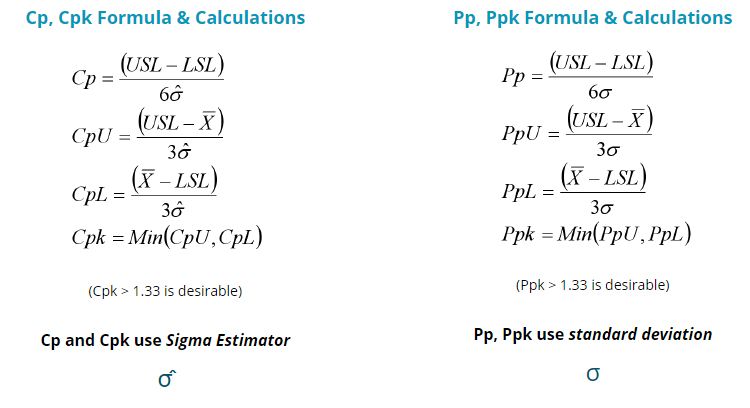
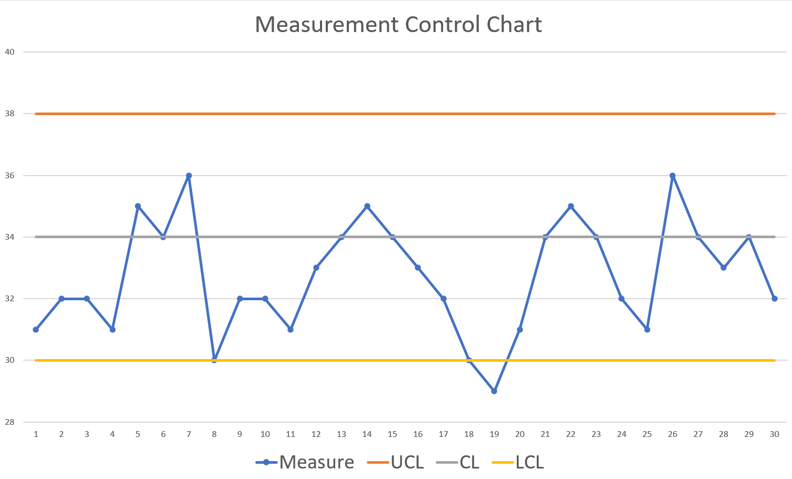

Six Sigma Process Management: Control Phase

Control Phase
The control phase involves implementing the actual changes, whether they be physical, behavioral or both; rewriting procedures and work instructions; retraining staff on new procedures; putting systems in place to measure and monitor the new process, such as control charts; and implementing an action plan. The key parts of the control phase are ensuring the stability of processes, maintaining cabability, and ensuring sustainability.
Statistical Process Control (SPC)
Statistical Process Control (SPC) as a term often is meant to refer to a group of graphical tools called control charts, which display process input or output continuous characteristics over time--with points plotted to represent statistical values of a subgroup of measurements through time. These charts serve three purposes
- control the critical to process (CTP) characteristics
- monitor critical to quality (CTQ), critical to cost (CTC), or critical to delivery (CTD) characteristics
- as diagnostic tools for any "critical to" characteristics
Process Capability and Process Performance Indices
Process capability indices (Cp and Cpk) and process performance indices (Pp, Ppk, and Cpm) identify the current state of the process and provide statistical evidence for comparing after-adjustment results to the starting point. Although these indices have a common purpose, they differ in their approach. T heir usual interpretation is based on a normal distribution of process output.
 (Hessing, n.d.)
Cp and Cpk, commonly referred to as process capability indices, are used to define the ability of a process to produce a product that meets requirements. Pp and Ppk are used for process performance assessment are generally used when a process is too new to determine if it is under statistical control.
As described by Oracle Applications, to understand Cp and Cpk you must have an understanding of the following terms:
Specifications: Specifications define product requirements. In other words, they define what is expected from an item for it to be usable. Specifications are normally defined in terms of nominal (+/-) tolerances or ranges (low to high. A specification for a piston ring, for example, might specify that the diameter be 74mm +/- 0.05mm. The upper specification limit (USL) is the upper limit of the specified range. Similarly the lower specification limit (LSL) is the lower limit of the specified range. See: Specifications.
| Specification | Specifications define product requirements. In other words, they define what is expected from an item for it to be usable. Specifications are normally defined in terms of nominal (+/-) tolerances or ranges (low to high. A specification for a piston ring, for example, might specify that the diameter be 74mm +/- 0.05mm. The upper specification limit (USL) is the upper limit of the specified range. Similarly the lower specification limit (LSL) is the lower limit of the specified range. See: Specifications. |
| Standard Deviation | The standard deviation is a measure of variability in a process. Defined as the root mean square (RMS) deviation from average it indicates how much a process can be expected to vary from the average. The standard deviation is normally fixed for a process that is under statistical control and can only be affected by a process change that affects the variability in a process. |
| Mean | The arithmetic average of a group of values. |
Specification limits are the voice of the customer through either customer requirements or industry standards. The amount of variance (process spread) the customer is willing to accept sets the specification limits.
Process capability indices (Cp and Cpk) and process performance indices (Pp, Ppk, and Cpm) identify the current state of the process and provide statistical evidence for comparing after-adjustment results to the starting point. Although these indices have a common purpose, they differ in their approach. T heir usual interpretation is based on a normal distribution of process output.
Cp (process capability index)
Cp measures the ratio between the specification tolerance (USL-LSL) and process spread (estimated from control charts or other process information). The Cp index is calculated using specification limits and the standard deviation only. This index indicates, in general, whether the process is capable of producing products tospecifications. No information on the ability of the process to adhere to the target value is included in this index
Cp = (Upper specification limit - lower specification limit) / 6σ
Important note: Cp and Cpk actually use a sigma estimator whereas Pp and Ppk use an actual standard deviation. Beyond that distinction, the formulas are the same for Cp and Pp as well as Cpk and Ppk.
A process that is normally distributed and is exactly midway between the specification limits would yield a Cp of 1 if the spread is +/- 3 standard deviations.
A generally accepted minimum value for Cp is 1.33 – this differs by industry, but the larger the number the better.
Limitations to this index include its requirements for both an upper and lower specification and is used once the process is centered.
Cpk (process capability index) - most widely used
Cpk measures the absolute distance of the mean to the nearest specification limit. This Cpk index is calculated using specification limits, the standard deviation, and the mean. The index indicates whether the process is capable of producing within specification and is also an indicator of the ability of the process to adhere to the target specification.
The formula for Cpk is as follows:
Cpk = min(USL - mean, mean - LSL) / (3σ) where USL and LSL are the upper and lower specification limits, respectively. There are two values calculated and the minimum value (worst case) is used.
Important note: Cp and Cpk actually use a sigma estimator whereas Pp and Ppk use an actual standard deviation. Beyond that distinction, the formulas are the same for Cp and Pp as well as Cpk and Ppk.
A process with a Cpk of 2.0 is considered excellent, while one with a Cpk of 1.33 is considered adequate.
Notes
- Cpk is a centering statistic for determining the location of the data points related to the customer’ s target within specifications (LSL and USL).
- A Cpk, of 1.00 or greater indicates that the process spread is located entirely within the specification limits.
- Cpk takes into account the centering process, unlike Cp.
- Together with Cp, Cpk provides a common measurement for assigning an initial process capability to center on specification limits.
- If Cpk = Cp, the process is centered.
- The closer the Cpk value is to the Cp value, the better.
- The closer the Cp value is to the Cpk value, the more centered the process is
- Cpk will always be equal to or less than Cp. Therefore, when Cpk = 1.00 or greater (regardless of the Cp value), the entire process spread (+ / - 3 standard dev) is located within the specification limits. Compare the values of Cp to Cpk to determine how well the process is centered
- A Cpk value of 0.00 indicates the process is centered at one of the specification limits. Approximately 50% of the process spread will be outside the specification limits
- A Cpk that has a negative value (for example Cpk = - 0.25) means the process is centered outside one of the specification limits.” More than 50% of the process spread is located outside the specification limit.
- Data must be continuous from a controlled process.
Pp (performance index)
Pp is an estimate used to measure the performance of a system in meeting customer demands or needs. It measures the ratio between the specification tolerance and process spread. Pp helps to measure improvement over time (as do Cp and Cpk). It signals where the process is in comparison to the customer’ s specifications (as does Cp and Cpk)
The formula for Pp is as follows:
Pp = (Upper specification limit - lower specification limit) / 6σ
Important note: Cp and Cpk actually use a sigma estimator whereas Pp and Ppk use an actual standard deviation. Beyond that distinction, the formulas are the same for Cp and Pp as well as Cpk and Ppk.
Notes on PP:
- Signals where the process is in comparison to the customer's specifications
- Uses the standard deviation from all of the data to generate a sigma
- Examines variation within and between subgroups
- Detects all the variation in the process even if the process drifts
- Pp tells the amount of variation but not alignment to the target (that's Ppk).
- When Pp ≥ 1; this indicates the process variation can potentially fit inside the specification limits.
Use when
- data collected type is continuous.
- the process is not in control (as shown by process control charts).
- establishing an initial process capability (along with Ppk).
Ppk (performance index)
Ppk tells us how a process has performed in the past and you cannot use it predict the future because the process is not in a state of control.
Ppk measures the absolute distance of the mean to the nearest specification limit. It provides an initial measurement to center on specification limits and examines variation within and between subgroups. Ppk is a process capability index determining the position of the data points centering on the USL and LSL. The Ppk index is similar to its Cpk counterpart. It combines the spread and the centering of the process into a single measure. This measure also penalizes the user if the center (mean) is too close to one of its specifications.
Ppk = min(USL - mean, mean - LSL) / (3σ) where USL and LSL are the upper and lower specification limits, respectively. There are two values calculated and the minimum value (worst case) is used.
Important note: Cp and Cpk actually use a sigma estimator whereas Pp and Ppk use an actual standard deviation. Beyond that distinction, the formulas are the same for Cp and Pp as well as Cpk and Ppk.
Benefits:
- Provides an initial measurement to center on specification limits.
- Uses the standard deviation from all of the data to generate a sigma.
- Used when the process is not in statistical control, but fits the normal distribution pattern.
- Detects all the variation in the process even if the process drifts.
Use when
- Data collected type is continuous.
- The process is not in control (as shown by process control charts).
- Establishing an initial process capability (along with Pp).
Notes
- Ppk tells alignment to the USL and LSL (not the amount of variation).
- A value of Ppk < 1 would indicate that the process is not meeting minimum requirements for process performance.
- Process can be out of control. For a process to be in control, it must only have common cause variation in the data.
- Common cause variation is having no more than one data point beyond the UCL or LCL when plotted on a X-bar and R-chart.
- Interpret Ppk in the same way as Cpk (see earlier section on Cpk).
In a nutshell:

Taguchi capability index, also known as Cpm (performance index)
Cpm is also referred to as the Taguchi index.
This index is touted by some to be more accurate and reliable than the other indices.
Cpm is based on the notion of reducing the variation from a target value (T).
T represents the target – in this index, T receives more focus than the specification limits.
Variation from the target T is expressed as process variability or σ2and process centering (µ - T), where μ = process average.
Cpm provides a common measurement assigning an initial process capability to a process for aligning the mean of the sample to the target.
- T = target value
- μ = expected value
- σ = standard deviation
Use When
- the target is not the center or mean of the USL-LSL.
- establishing an initial process capability during the Measure phase.
Notes:
- Cpm is computed from data when the target spec is not the mean of the USL-LSL data.
- The higher the Cpm value, the more likely the process will produce output meeting the specs and the target
Learn more about Taguchi capability index (CPM)
Specifications
Specifications define product requirements. In other words, they define what is expected from an item for it to be usable. Specifications are normally defined in terms of nominal (+/-) tolerances or ranges (low to high. A specification for a piston ring, for example, might specify that the diameter be 74mm +/- 0.05mm. The upper specification limit (USL) is the upper limit of the specified range. Similarly the lower specification limit (LSL) is the lower limit of the specified range. See: Specifications
Specification limits are the voice of the customer through either customer requirements or industry standards. The amount of variance (process spread) the customer is willing to accept sets the specification limits.
Control charts
The Control Chart shows us how a process has changed over time and the different measurements received. They track process statistics over time and to detect the presence of special causes. A control chart plots a process statistic, such as a subgroup mean, individual observation, weighted statistic, or number of defects, versus sample number or time. The center line (CL) is the average of the statistic by default; the upper control limit (UCL) is typically 3 sigma above the center line and lower control limit (LCL) is typically 3 sigma below the center line. We are able to find and quickly correct any problems that arise by monitoring data in a Control Chart.
The data given in the figure below is a representation of a measurement taken over a period of time, specifically one measurement taken daily over a 30-day period. When data like this (measured over a period of time) is put into a control chart, it becomes much easier to see trends and also when there are measurements outside of the required limits.

By observing the data in above sample, we can see that there are some points that are out of the normal distribution that we should address. The first one we see is on Day 19, where the measurement drops completely below our lower control limit. As managers, we should review that day and learn what caused this to happen to prevent it from happening in the future. Another flag is the fact that there are multiple instances where two out of the three successive points are on the same side of the centerline and are farther than two standard deviations from the mean. This shows that the project or process is consistently below where it should be measuring and comparisons would need to be done to see what the difference is between the higher days, compared to the lower days.
View video of how to make basic control charts in Excel.
Other useful resources:
- Description of control charts by American Society for Quality.
- Different control chart types by Six Sigma Study Guide.
References
Hessing, T. (n.d.) Process Capability (Cp and Cpk). Six Sigma Study Guide. Retrieved March 12, 2021 from https://sixsigmastudyguide.com/process-capability-cp-cpk/
Oracle Applications. Cp and Cpk. Retrieved March 12, 2021 from https://docs.oracle.com/cd/A60725_05/html/comnls/us/qa/cpcpk.htm